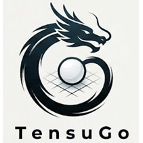

SGF 与变化图
导入棋谱后保留分支结构，主分支、变化、删除和回到分歧点都按研究习惯组织。

天书阁（TensuGo）给想真正看懂棋局的人
天书阁（TensuGo）把棋盘、本地 KataGo 分析、变化图和复盘笔记放在同一张工作台上， 让你看清哪里变了、为什么重要，以及下一步该练什么。
本地优先。你的棋谱默认留在自己的电脑上。
为复盘而生：留下有价值的分支，而不只是引擎的第一推荐。

问题
很多复盘工具只停在一个分数，或一条云端变化图。天书阁把整段思考放在一起： 局面、候选方案、转折点，以及你自己的解释。引擎停下来之后，这盘棋仍然能继续教你。
功能
导入棋谱后保留分支结构，主分支、变化、删除和回到分歧点都按研究习惯组织。
连接本机 KataGo，查看候选点、胜率、目差、访问量和 PV，不需要把棋谱上传到云端。
候选气泡、列表和胜率走势同步显示，适合快速定位胜负手、缓手和方向选择。
把局面图、候选变化和文字解说放进研究文档，便于赛后总结、教学和资料归档。
工作流
打开 SGF，沿主分支或任意变化进入局面。
启动本地 KataGo，查看候选点和 AI 推荐变化。
保留有价值的分支，比较不同下法的目差和走势。
生成带局面图和说明的复盘资料。
下载
大多数用户会在 Windows 上使用天书阁（TensuGo），所以 Windows x64 版本已经发布， 并内置 KataGo OpenCL 引擎。macOS Apple Silicon 版本保持轻量，需要用户自行安装 KataGo。
内置 KataGo OpenCL 引擎，2026.5 版本。
下载 Windows MSI
不内置引擎。请先通过 Homebrew 安装 KataGo：
brew install katago
安装天书阁（TensuGo）后，打开 设置 > 引擎， 使用 Auto Detect 自动检测和配置引擎。也可以在同一面板手动下载并配置引擎。
下载 macOS DMG